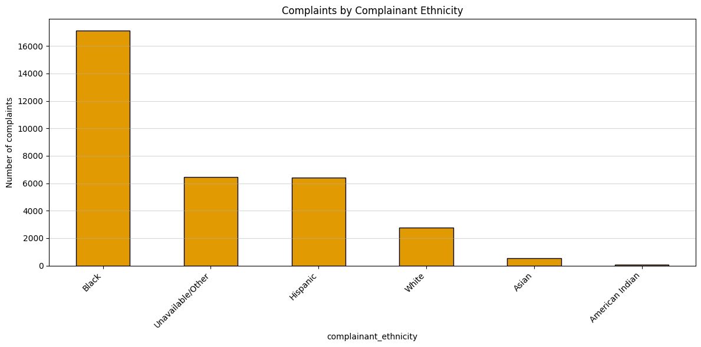
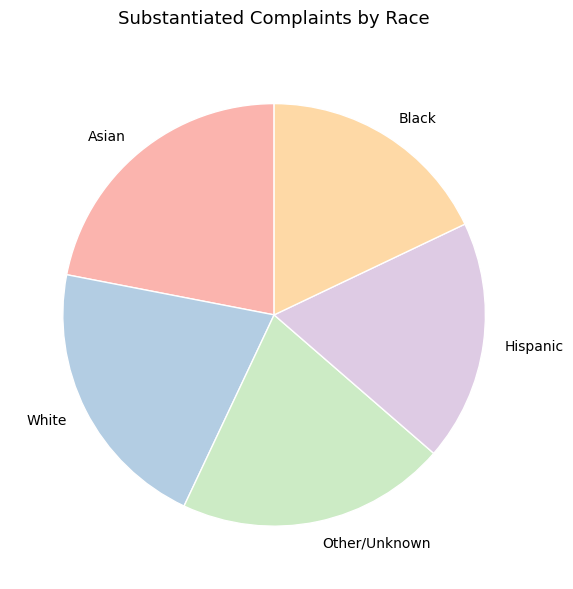

Proposition: NYPD Police are racially biased
FOR the Proposition

Design Decisions and Rationale:
- Design Decision: We chose to display raw counts (the absolute number of complaints) instead of calculating and displaying rates.
Rationale: The Intent was to make it seem like minorities (Black/Hispanic) were more prone racial bias and therefore were submitting more complaints.
Deception Score: -2.0 - Design Decision: We aggregated "Unknown," "Other," and similar marginal categories into a single, generic category "Unavailable/Other," and then positioned it highly in the ordering.
Rationale: This was made to make it appear that races who do not fit a specific definition and are likewise minorities are also being racially biased against.
Deception Score: -1.5 -
Design Decision: We sorted the data from highest to lowest.
Rationale: We wanted to emphasize the minorities which are more likely to submit complaints by having the viewer see them first.
Deception Score: -0.5
AGAINST the Proposition

Design Decisions and Rationale:
- Design Decision: Used a pie chart for data that don’t sum to 100% and omitted value labels.
Rationale: I used a pie chart which makes it hard to tell the exact values of the chart. Because of this, readers may assume that all the slices represent a normal distribution, when in fact there is noticeable deviation. I chose this format because it is the hardest for viewers to accurately compare proportions.
Deception Score: -1.0 -
Design Decision: Used substantiated rate within each race (substantiated / total complaints for that race).
Rationale: The plotted values are the substantiation rates within each race, not the distribution of substantiated cases between races. The values themselves do not sum to 100%, which can mislead viewers into believing they represent shares of a whole. This works well because audiences naturally assume a pie chart shows proportions across all groups rather than within each one.
Deception Score: -2.0 -
Design Decision: Only included substantiated cases.
Rationale: I excluded “Unsubstantiated” and “Exonerated” cases, implying that only confirmed complaints exist. This omits important context about how many complaints were disproven or inconclusive, subtly exaggerating the seriousness of the substantiated category.
Deception Score: -1.0 -
Design Decision: Did not include a note about totals or denominators.
Rationale: The chart shows percentages rather than raw counts, and without clarifying the total number of complaints per race, it hides the fact that some groups may have submitted far fewer cases. This amplifies the perceived differences across races.
Deception Score: -0.5
Final Reflection
What was straightforward in our bar chart of CCRB complaints by complainant race was how basic presentation choices steered attention. Sorting the bars in descending order and plotting raw counts put Black and Hispanic groups at the top, which shaped the first impression. Aggregating “Unknown,” “Other,” and similar labels into one bucket simplified the display while nudging the reader toward a “minorities plus other” narrative. What was difficult was knowing when these same moves began to bias inference, for example collapsing categories that may differ in important ways or choosing counts instead of per capita rates. I was surprised by how softer colors still affected interpretation (muted groups recede and saturated groups stand out), how annotation density and axis limits changed perceived gaps, and how a percentage like “24%” can be correct yet misleading if the large underlying base count is not shown.
In the pie chart of substantiated outcomes, the persuasive pull came from the format itself. We plotted within-race substantiation percentages in a pie, which does not sum to 100%, so the figure looked like parts of a whole even though it was not. Omitting unsubstantiated and exonerated outcomes further amplified the impression that confirmed cases dominate. From these two visuals, I believe ethical analysis and visualization as designs that a careful reader can understand without insider knowledge. Encodings match the question (rates for rate questions and counts for volume), denominators and totals are labeled, filters and time windows are stated, and the graphic avoids implying structure that is not present. Under those criteria, acceptable persuasion can be determined from good labeling and data presentation. A choice becomes misleading when context is hidden, when a figure implies something that doesn't exist, or when ordering and aggregation mask diversity. If a viewer must guess the denominator or the subset, the line has been crossed.